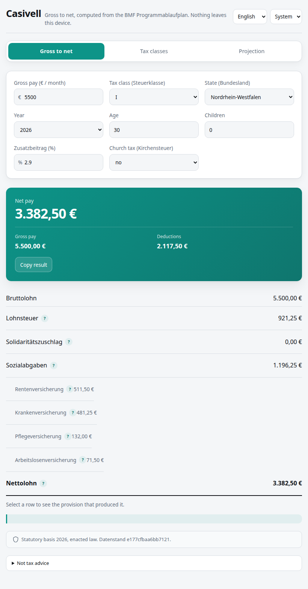
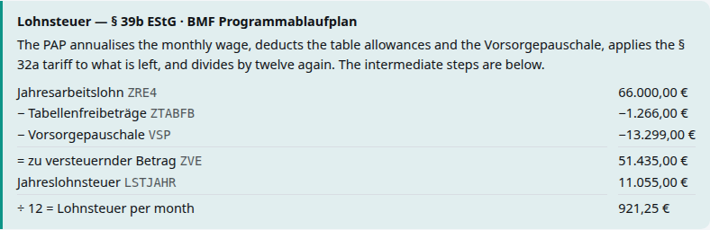
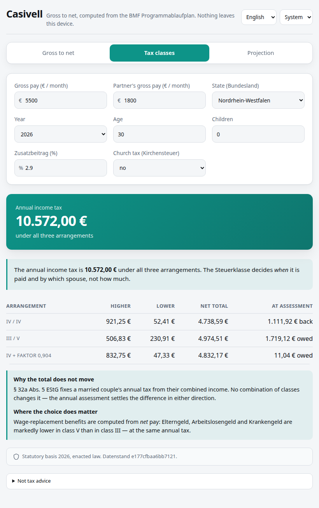
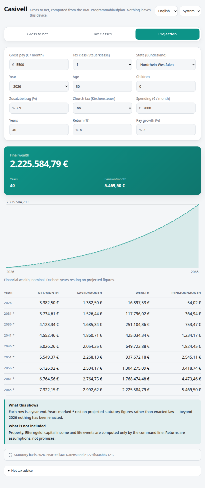
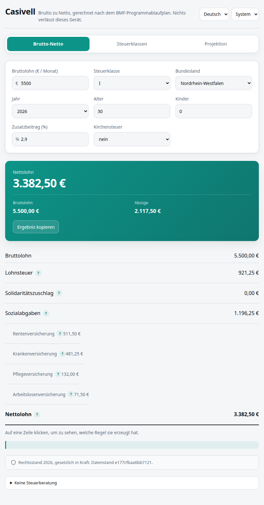
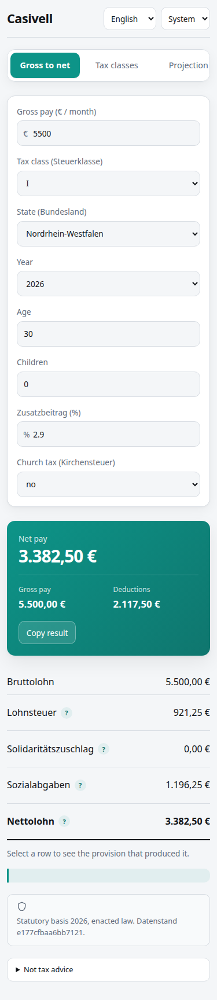

What this software does, shown running. Every screenshot is a real capture of the browser build; every terminal block is real output, pasted unedited. Nothing here is a mock-up.
Casivell computes German income tax, payroll withholding, social insurance and pension entitlement, and projects a household forward from there. It runs entirely on your device — in the browser it is a WebAssembly module, and nothing is sent anywhere.
It exists because getting these figures right is unglamorous and mostly a matter of reading the statute carefully. Every number it uses is cited to a primary source and carries a status: enacted law, or a projection with stated assumptions.
A browser page with three forms, and a command line with five plus scenario files. The browser covers what most people want; the command line reaches everything the engine does.
Both call the same Rust code. The browser figures and the terminal figures are identical to the cent, and this document shows the same household through both so you can check.
Enter a gross salary and the circumstances that affect it. The result appears as you type; there is no submit button and no network request.

Why the deduction names stay German. Lohnsteuer, Sozialabgaben and Nettolohn are the words printed on a German payslip. Showing "wage tax" would make a figure harder to check against the document it came from, so the terms stay and the explanations around them translate.
Selecting a row opens the provision behind it. For the Lohnsteuer, that is the full § 39b working in the Programmablaufplan's own variable names — the same chain the command line prints, from the same numbers.

Compare it against the same calculation from the command line, further down in § 7: the figures match line for line.
A married couple picks between three arrangements. The page leads with the fact rather than burying it: the annual tax is identical under all three.

Where the choice does matter, and it is not the tax. Wage-replacement benefits — Elterngeld, Arbeitslosengeld, Krankengeld — are computed from net pay, so they follow the class. Choosing one before a birth is a real decision; choosing one to "pay less tax" is not.
The same household, forward over decades: month by month through the same payroll code, with the year ends charted.

The chart is allowed to go down. With pay that never rises and spending that tracks inflation, wealth peaks around the twenty-eighth year and falls. The page says so in words when it happens. A projection that only ever curved upward would be flattering nonsense.
Both languages, chosen from a stored preference, the browser's list, or a ?lang=
link. German is the fallback — the figures and the documents they are checked against are
German.
?lang=en
?lang=deLook at the two result tables: they are identical. Only the chrome and the explanations change. That is the design — a statutory term has one name, and it is the one on the form.

Five forms. Everything below is real output.
The same household as the browser screenshot — compare the figures.
$ casivell --gross 5500 --class 1 --state NW
Casivell — Lohnabrechnung
2026 · Steuerklasse I · NW · monthly
Bruttoentgelt 5.500,00 €
Steuern
Lohnsteuer -921,25 €
Solidaritätszuschlag 0,00 €
Sozialversicherung (Arbeitnehmeranteil)
Rentenversicherung 9,30 % -511,50 €
Arbeitslosenversicherung 1,30 % -71,50 €
Krankenversicherung 8,75 % -481,25 €
Pflegeversicherung 2,40 % -132,00 €
Summe -1.196,25 €
────────────────────────────────────────────────────────────
Nettoentgelt 3.382,50 €
(61,50 % of gross)
And the working the browser shows in its panel:
Wie die Lohnsteuer ermittelt wurde (§ 39b EStG, BMF-PAP 2026)
Jahresarbeitslohn (ZRE4) 66.000,00 €
− Tabellenfreibeträge (ZTABFB) -1.266,00 €
− Vorsorgepauschale (VSP) -13.299,00 €
= zu versteuernder Betrag (ZVE) 51.435,00 €
Jahreslohnsteuer (LSTJAHR) 11.055,00 €
÷ 12 = Lohnsteuer im Monat 921,25 €
The § 2 EStG chain, stage by stage — this is the view for reconciling a Steuerbescheid. Note the margin notes: which Pauschbetrag applied, where a cap bound.
$ casivell assess --gross 5000 --class 1 --children 1 --capital 3000 --medical 4000 --disability 50
Casivell — Jahresveranlagung 2026
Estimated, not a Steuerbescheid. See the notes.
Zu versteuerndes Einkommen (§ 2 EStG)
Bruttoarbeitslohn 60.000,00
− Werbungskosten (§ 9, § 9a) 1.230,00 Pauschbetrag
= Einkünfte (§ 19) 58.770,00
= Gesamtbetrag der Einkünfte 58.770,00
− Altersvorsorge (§ 10 Abs. 1 Nr. 2) 5.580,00
− Sonstige Vorsorge (§ 10 Abs. 1 Nr. 3) 6.154,80 Satz 4 override
− Übrige Sonderausgaben (§§ 10–10c) 36,00 Pauschbetrag
− Außergewöhnliche Belastungen (§§ 33, 33b) 3.453,90
4.000,00 € of costs less the 1.686,10 € zumutbare Belastung (§ 33 Abs. 3)
including a 1.140,00 € Behinderten-Pauschbetrag, not reduced by the threshold
= Einkommen 43.545,30
Steuer
zu versteuerndes Einkommen 43.545,30
Einkommensteuer (§ 32a) 8.353,00
Solidaritätszuschlag 0,00
Kirchensteuer 0,00
= Gesamtbelastung 8.353,00
Kinder (§ 31 Günstigerprüfung)
The Kindergeld of 3.108,00 € wins; the Kinderfreibetrag is not granted.
Abrechnung
Lohnsteuer einbehalten 9.510,96
Erstattung 1.157,96 back
Capital income is reported separately, because § 32d taxes it outside the tariff — and the Abs. 6 election is something a taxpayer must actually claim on the return:
Kapitalerträge (§ 32d EStG)
Gross 3.000,00 €, less 1.000,00 € Sparer-Pauschbetrag, leaves 2.000,00 € taxable.
Taxed at the flat 25 % (Abs. 1); electing the tariff would cost more.
Tax 500,00 €, Soli 0,00 €, Kirchensteuer 0,00 €, total 500,00 €.
$ casivell classes --gross 5000 --partner 1800 Casivell — Steuerklassenvergleich 2026 Two salaries: 5.000,00 € and 1.800,00 € a month The annual income tax is 9.180,00 € under all three. The tax class decides when it is paid and by which spouse — not how much. Arrangement Higher/mo Lower/mo Net/mo At assessment ────────────────────────────────────────────────────────────────────── IV / IV 782,41 52,41 4.486,18 837,84 € back III / V 401,83 230,91 4.688,26 1.587,12 € owed IV + Faktor 0,916 716,66 48,00 4.556,34 4,08 € owed
Grunderwerbsteuer is the state's own rate and exact; the notary line is labelled estimated because the GNotKG fee schedule is not implemented.
$ casivell property --price 400000 --state NW --deposit 80000 --agent 3,57
Casivell — Immobilienkauf 2026
400.000,00 € in NordrheinWestfalen
Kaufnebenkosten
Grunderwerbsteuer (6,50 %) 26.000,00 € statutory
Notar und Grundbuch 8.000,00 € estimated
Maklerprovision 14.280,00 € contractual
= Nebenkosten (12,07 %) 48.280,00 €
= Gesamtaufwand 448.280,00 €
Finanzierung
Eigenkapital 80.000,00 € 20,00 % of the price
Darlehen 368.280,00 €
Monatliche Rate 1.687,95 €
Laufzeit 29 J 0 M
Zinsen insgesamt 218.013,77 €
After the 10-year Zinsbindung:
Restschuld 280.241,25 € to refinance
Zinsen bis dahin 114.515,25 €
$ casivell law --year 2026
Casivell — Rechengrößen 2026
ENACTED LAW — transcribed from primary sources.
Einkommensteuertarif (§ 32a EStG)
Grundfreibetrag 12.348,00 €
Ende Zone 2 17.799,00 €
Beginn 42 % (Spitzensteuersatz) 69.879,00 €
Beginn 45 % (Reichensteuer) 277.826,00 €
Sozialversicherung
BBG Renten-/Arbeitslosenvers. (Monat) 8.450,00 €
BBG Kranken-/Pflegevers. (Monat) 5.812,50 €
Durchschnittsentgelt (Jahr) 51.944,00 €
Bezugsgröße (Monat) 3.955,00 €
A birth, fourteen months of parental leave, and the tax that follows a year later.
$ casivell project --gross 4000 --class 1 --children 1 --expenses 1800 --child-born 2 --parental-leave 2:14 --years 8 Casivell — Haushaltsprojektion 8 years from 2026 · nominal (euro of the day) Assumptions: 2,00 % prices, 2,80 % wages, 0,00 % investment return, 0,00 % pay growth Life events · 2028: a child is born; Kindererziehungszeit follows (§ 56 SGB VI) · 2028 to 2029: parental leave, Basiselterngeld for 14 months Year Gross/mo Net/mo Elterngeld Saved/mo Settle Wealth Points Pension/mo ─────────────────────────────────────────────────────────────────────────────────────────────────── 2026 4.000,00 2.622,17 0,00 822,17 0,00 9.866,04 0,92 39,29 ┈┈┈┈┈┈┈┈ enacted law ends here; rows below are projected 2027 4.000,00 2.631,25 0,00 795,25 0,96 19.410,00 1,82 79,68 2028 0,00 0,00 1.650,73 -221,99 1,00 16.747,12 2,74 123,07 2029 4.000,00 2.649,42 1.650,73 739,25 0,00 23.620,74 4,45 205,44 2030 4.000,00 2.658,50 0,00 710,13 411,80 32.554,10 6,27 297,92 2031 4.000,00 2.667,67 0,00 680,33 1,00 40.719,06 7,16 349,62 2032 4.000,00 2.676,84 0,00 649,75 0,96 48.517,02 7,95 398,72 2033 4.000,00 2.686,09 0,00 618,46 0,92 55.939,46 8,71 449,22
A saved scenario records the invocation and the fingerprint of the statutory data it was computed against — not a serialised struct, which would drift as the software grew.
$ cat rent.casivell # Casivell scenario # Replay with: casivell replay <this file>. Editable by hand. schema = 1 [invocation] form = project arg = --gross arg = 6000 arg = --class arg = 1 arg = --expenses arg = 1500 arg = --return arg = 5,0 arg = --years arg = 25 [law] year = 2026 fingerprint = e177cfbaa6bb7121
Replaying re-runs it and checks the law has not moved underneath:
$ casivell replay rent.casivell … the projection is re-run and printed in full, then: Replayed against unchanged 2026 law (e177cfbaa6bb7121).
If the statutory data has moved, the figures are still computed — but the warning comes first, because a caveat printed under several screens of numbers is one nobody reads:
$ casivell replay stale.casivell # a scenario saved under different data ⚠ The statutory data for 2026 has changed since this scenario was saved (saved aaaaaaaaaaaaaaaa, now e177cfbaa6bb7121). The figures below are computed from the current data, so they will not match what was saved. This is the law being corrected or updated, not an error.
And two scenarios can be compared. Here, renting against buying over twenty-five years:
$ casivell compare rent.casivell buy.casivell
Casivell — Szenarienvergleich
A rent.casivell
B buy.casivell
Was sich unterscheidet
only B: --property-growth 2,0 --buy 3:400000:100000:NW:900
Ergebnis nach 25 Jahren A B B − A
──────────────────────────────────────────────────────────────────────────────
Nettovermögen 1.151.341,41 1.022.423,82 -128.917,59
Geldvermögen 1.151.341,41 514.627,31 -636.714,10
Tiefster Stand 2.141,58 -16.322,88 -18.464,46
Steuern einbehalten 270.597,96 270.597,96 0,00
Erstattungen 48,00 48,00 0,00
Sozialabgaben 391.198,92 391.198,92 0,00
Elterngeld 0,00 0,00 0,00
Hypothekenzinsen 0,00 183.252,66 183.252,66
Entgeltpunkte 25,37 25,37 0,00
Read the identical rows. Tax, contributions and Entgeltpunkte come out the same to the cent — the check that the difference is the housing decision and nothing else. And the buyer's lowest point is below zero: a plan that passed through insolvency, which an end state alone would have hidden.
Payroll withholding is checked against the BMF's own Prüftabellen — the reference tables German payroll products are validated against.
Withholding is designed to be right for a flat year. It is: the § 39b path and the § 2 annual assessment land within 96–332 cents of each other across a sixfold salary range, computed by different code from different statutes.
Projected tariff coefficients are derived from the Eckwerte, and the derivation reproduces all eight published coefficients for both enacted years exactly.
Each year's statutory data has a fingerprint. Quote it beside a figure and anyone can confirm they are looking at the same law.
Where no reference exists — § 10 Vorsorgeaufwendungen, the § 39f Faktorverfahren, Elterngeld — that is stated in the code and in the documentation, and the verification is built from what is available instead.
The full account is docs/LIMITATIONS.md. The three that matter most:
Casivell is a calculator, not advice within the meaning of §§ 1–4 StBerG. Figures are estimates for planning. Where a real filing or a real decision is at stake, a Steuerberater is the answer.